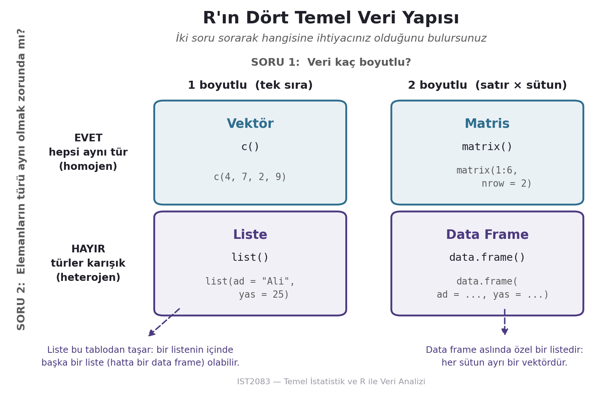

x <- 10 # sayısal
y <- "Merhaba" # karakter dizesi
z <- TRUE # mantıksal2026-09-10
Bu oturumun sonunda:
NA’in ne anlama geldiğini ve na.rm’in metodolojik bedelini bileceksinizUyarı: c, data, mean gibi fonksiyon adlarını değişken adı yapmayın. R engellemez, ama kodunuzu okunamaz hâle getirir.
Bir vektörün tüm elemanları aynı türde olmak zorundadır. Farklı türler koyarsanız R hata vermez, sessizce dönüştürür.
logical → integer → double → character
(en katı) (en esnek)Sayısal bir sütuna sızan tek bir "yok" / "-" / "cevapsız" hücresi, tüm sütunu karaktere çevirir.
R hata vermedi — uyarı basıp NA döndürdü. Uzun bir script’te bunu kaçırmak kolaydır.
Önemli
Veriyi içe aktardıktan sonra ilk iş str() ile sütun türlerini kontrol etmek.
TRUE = 1NANA sıfır değil, boşluk değil — “bilinmiyor” demektir.
na.rm = TRUE Bir Varsayımdır[1] NA[1] 5550[1] 2Uyarı
Soru teknik değil metodolojik: kim cevap vermedi? Eksik yanıtlar sistematikse na.rm = TRUE ortalamayı düzeltmez, yanlı yapar. 7. oturumda buraya döneceğiz.
factorSosyal bilimde değişkenlerin çoğu kategoriktir: rejim türü, eğitim düzeyi, Likert ölçeği, bölge, parti.
egitim <- factor(
c("Lisans", "Lise", "Doktora", "Yüksek Lisans"),
levels = c("Lise", "Lisans", "Yüksek Lisans", "Doktora"),
ordered = TRUE
)
egitim[1] > egitim[2][1] TRUER, karakter vektöründe yapamayacağı karşılaştırmayı burada yapıyor — çünkü hiyerarşiyi siz tanımladınız.
skorlar <- c(33.4, 89.2, 64.1, 58.7, 41.9)
c(n = length(skorlar), toplam = sum(skorlar),
ortalama = mean(skorlar), std_sapma = sd(skorlar)) n toplam ortalama std_sapma
5.00000 287.30000 57.46000 21.64516 Dizi üretimi: seq(1, 10, by = 2) · rep(1, times = 5) · Yardım: ?mean · help(sum)
Aynı türden değerler, tek boyut. Konuma ya da isme göre erişim:
Gerçek soru “üçüncü eleman nedir?” değil, “skoru 60’ın üzerinde olanlar hangileri?”
Çıktı bir sayı değil — vektörle aynı uzunlukta bir TRUE/FALSE maskesi.
Farklı türleri bir arada tutar:
Satır ve sütun aynı varlık kümesi; hücre aradaki akış.
Her satır bir gözlem, her sütun bir değişken:
panel <- data.frame(
ulke = c("Türkiye", "Almanya", "Tunus", "Polonya"),
skor = c(33.4, 89.2, 64.1, 58.7),
ab_uyesi = c(FALSE, TRUE, FALSE, TRUE),
rejim = factor(c("Melez", "Demokrasi", "Melez", "Demokrasi"))
)
str(panel)'data.frame': 4 obs. of 4 variables:
$ ulke : chr "Türkiye" "Almanya" "Tunus" "Polonya"
$ skor : num 33.4 89.2 64.1 58.7
$ ab_uyesi: logi FALSE TRUE FALSE TRUE
$ rejim : Factor w/ 2 levels "Demokrasi","Melez": 2 1 2 1| ulke | skor | ab_uyesi | rejim | |
|---|---|---|---|---|
| 2 | Almanya | 89.2 | TRUE | Demokrasi |
| 3 | Tunus | 64.1 | FALSE | Melez |

Bu yüzden hem panel$skor (liste sözdizimi) hem panel[1, 2] (tablo sözdizimi) çalışır.
tibble [1,704 × 6] (S3: tbl_df/tbl/data.frame)
$ country : Factor w/ 142 levels "Afghanistan",..: 1 1 1 1 1 1 1 1 1 1 ...
$ continent: Factor w/ 5 levels "Africa","Americas",..: 3 3 3 3 3 3 3 3 3 3 ...
$ year : int [1:1704] 1952 1957 1962 1967 1972 1977 1982 1987 1992 1997 ...
$ lifeExp : num [1:1704] 28.8 30.3 32 34 36.1 ...
$ pop : int [1:1704] 8425333 9240934 10267083 11537966 13079460 14880372 12881816 13867957 16317921 22227415 ...
$ gdpPercap: num [1:1704] 779 821 853 836 740 ...Bu tek çıktıda haftanın tamamı var: faktör, tamsayı, ondalıklı sayı — hepsi bir data frame’de.
uzun_omur <- gapminder[gapminder$year == 2007 &
gapminder$lifeExp > 80, ]
uzun_omur[, c("country", "lifeExp")]| country | lifeExp |
|---|---|
| Australia | 81.235 |
| Canada | 80.653 |
| France | 80.657 |
| Hong Kong, China | 82.208 |
| Iceland | 81.757 |
| Israel | 80.745 |
| Italy | 80.546 |
| Japan | 82.603 |
| New Zealand | 80.204 |
| Norway | 80.196 |
| Spain | 80.941 |
| Sweden | 80.884 |
| Switzerland | 81.701 |
Bir data frame, iki koşul, &, virgül kuralı, sütun seçimi.
setwd() Komutunu Unutunpanel[panel$skor > 60, ] doğru ama hantal — adı iki kez yazıyoruz.
02_modul_lab.qmd — derste birlikte, boşlukları siz dolduracaksınız02_modul_alistirmalar.qmd — 20 çoktan seçmeli soru02_modul_cevap_anahtari.qmd — gerekçeli cevaplarR-Hizli-Referans.qmd — bu haftanın sözdizimi oraya eklendi?fonksiyon_adi / help(fonksiyon_adi)Önemli
Sınavda yalnızca elle yazılmış kişisel not kabul edilir. Basılı cheat sheet getirilemez — bu yüzden kendi referansınızı şimdiden yazmaya başlayın.